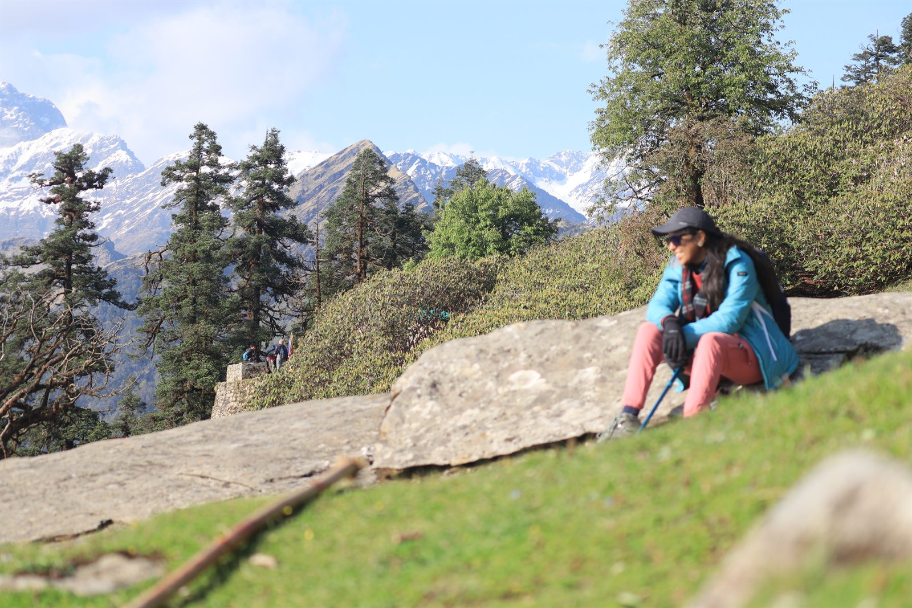

38 Trail PhotosFrom Warm Coimbatore to Freezing Himalayan Peaks: My First North India Trek
Living in warm South India, I had never experienced mountain snow, freezing wind, or a multi-day climb. Here is our honest journey from Coimbatore to Devprayag Sangam, Chopta camp at 2°C, the 4,000-meter climb up Chandrashila Peak, Tungnath Temple, four steep hours to Deoriatal Lake, and 16 km rafting in Rishikesh without knowing how to swim.
Route: Coimbatore → Delhi → Devprayag → Chopta → Chandrashila → Tungnath → Deoriatal → Rishikesh